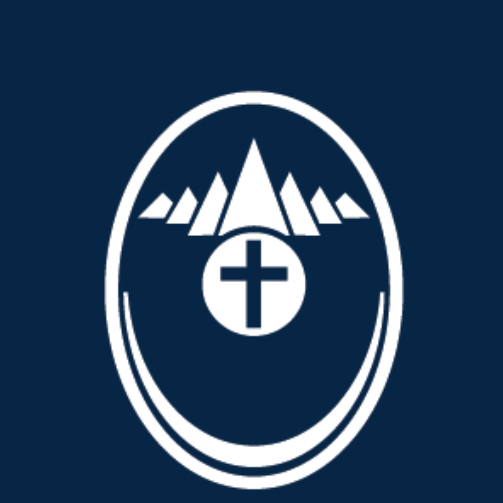

Bem-vindo ao Mapa Interativo com alguns dados das Centrais do Dízimo no Brasil e no mundo!
Clique no botão "Entidades Atendidas" para ver a quantidade de doações realizadas por cada Central do Dízimo, as entidades atendidas e o ano em que foram beneficiadas.
Clique no botão "Escolas Profissionalizantes" para ver as escolas doadas, sua localização, informações sobre o edifício e cursos oferecidos, além de suas capacidades de formação de alunos por ano.
Use o botão "Ver Gráficos" para visualizar a evolução histórica das doações.
Use o botão "Infográficos" para ver algumas informações pontuais sobre as doações realizadas.
Clique em qualquer espaço do mapa para voltar ao resumo global.

Resumo de Doações
0 Doações
Selecione uma central para ver os detalhes ou visualize os totais agregados.